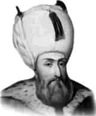

KANUNİ SULTAN SÜLEYMAN
Annesi : Hafsa Hatun
Doğumu : 27 Nisan 1495
Vefatı : 7 Eylül 1566
Saltanatı : 1520 - 1566 (46 yıl)
Kanuni Sultan Süleyman, Trabzon’da dünyaya geldi. O sırada babası orada vali idi. Babası O’nu küçük yaştan itibaren çok titiz bir şekilde yetiştirmeye başladı ve emsali görülmeyen bir terbiye ve tahsil ile yetiştirildi. Yirmi altı yaşında padişah oldu.
Çok ciddi ve vakurdu. Yapacağı işler hakkında hiç acele etmez, gayet geniş düşünür ve verdiği emirden geri dönmezdi. İş başına getireceği adamların kabiliyet derecelerine göre vazife verirdi. Kanuni’nin yüzü yuvarlak, gözleri elâ, kaşları arası biraz açık, doğan burunlu, uzun boylu ve seyrek sakallı idi. Azim ve irade sahibiydi. Devri, Türk hâkimiyetinin kemale ulaştığı bir devir olmuştur. Kendisine Kanuni denmesi, yeni kanunlar icat etmesinden değil, mevcut kanunları yazdırtıp çok sıkı bir şekilde tatbik etmesinden dolayıdır. Zamanında İngiltere Kralı. Vlll. Henry, İstanbul’a bir heyet gönderip, adalet mekanizmasının nasıl işlediğini tetkik ettirerek kendi memleketine örnek almıştır. Avrupa tarihçilerinin Muhteşem Süleyman dedikleri büyük hükümdar, büyük dedesi Fatih gibi sayısız seferlere bizzat kendisi iştirak etmiştir.
Zamanında cereyan eden mühim hadiselerden bazıları şunlardır: 1522 yılında Rodos’u aldı. Fransa kralının yardım isteğini kabul ederek Alman imparatoruna bir mektup yazdı ve Alman imparatoru, I. François’i serbest bıraktı. 1526’da Mohaç Muharebesi ile Macaristan’ı ortadan kaldırdı. Budapeşte’yi fethetti. 1529’da Viyana’yı kuşattı. 1532’de Avusturya seferine çıktı. 1533’te Almanya ile anlaşma imzalandı. 1537’de Otranto fethedildi. Ancak, Venedik Savaşı sebebiyle daha sonra ordu Otranto’dan çekildi. 1543’de Estergon, İsto-ini ve Belgrad’ı fethetti. Barbaros kardeşler Akdeniz’de yenmedik donanma bırakmadılar ve Kuzey Afrika’yı alarak Osmanlı topraklarına bağladılar. Kırım hanları, Moskova’ya kadar ilerlediler. Hint Okyanusu’na donanma gönderilerek oradaki Müslümanlara yardımlarda bulunuldu. Sudan ve Habeşistan’da fetihler yapıldı. 1548’de Tebriz 4 defa alındı. Osmanlıların en büyüklerinden birisi olan Muhteşem Padişah 7 Eylül 1566 günü savaş meydanında iken ahiret âlemine irtihal etti. O anda Zigetvar Kuşatması’nı idare ediyordu.
Vefatında yetmiş bir yaşını dört ay on gün geçiyordu. Kırk altı yıl padişahlık yaptı. Büyük bir devlet adamı ve ünlü bir şairdi. Meşhur şiirlerinden birisi şudur:
Halk içinde muteber bir nesne yok devlet gibi. Olmaya devlet cihanda, bir nefes sıhhat gibi. Saltanat dedikleri bir cihân kavgasıdır. Olmaya baht ü saadet dünyada vahdet gibi.
Babasından 6.557.000 km2 olarak devraldığı İmparatorluğun topraklarını, 14.893.000 km2 ye çıkarmıştı. Cenaze namazını Şeyhülislâm Ebussuud Efendi ve Nakibü’l - Eşraf Taşkentli Muhterem Efendi kıldırmıştır. Süleymaniye Camii avlusundaki türbesinde gömülüdür.
Erkek çocukları: II. Selim, Beyazıt, Abdullah, Murat, Mehmet, Mahmut, Cihangir, Mustafa.
Kız çocukları: Mihrimah, Raziye.